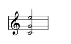

4.3. Chords
A chord, in polyphony, is any harmonic set of usually three or more notes that is heard as if sounding simultaneously. Therefore, a chord is obtained by defining three or more notes, in different voices sounding simultaneously:

Also, what engravers call a chord, is a musical unit in which the notes share vertical baseline, stem, articulation, etc. This grouping indicates not only simultaneity, but also the composer’s intent to visually group simultaneous notes as a musical event:
In LDP the chord element must be understood in this last way, as a musical unit in which the notes share properties. In LDP a chord is just the list of notes that form the chord:
chord ::= (chord note*)
Example:
(score (vers 2.0) (instrument (musicData
(clef C2)
(chord (n c4 q)(n e4 q)(n g4 q)) // C major chord
(chord (n c4 q)(n f4 q)(n a4 q)) // F major chord
(chord (n b3 q)(n f4 q)(n g4 q)) // G major 7 chord
(chord (n c4 q)(n e4 q)(n g4 q)) // C major chord
(barline)
)))
Chords has some unique characteristics that are different from stacking notes by using different voices.
The first issue is that all the notes in a chord element must be of the same type (duration) and are assigned to the same voice.
The other important issue is that non-note-specific properties that are shared by all notes in a chord may only occur once, and must occur on the first note. These include both visual properties like stems/beams and musical properties like articulations. It does not include true note-grain properties like cue or color.
For instance, to change the stem direction the stem must be included only in first note:
(score (vers 2.0) (instrument (musicData
(clef G)
(chord (n c4 q)(n e4 q)(n g4 q))
(chord (n c4 q (stem down))(n e4 q)(n g4 q))
(barline)
)))